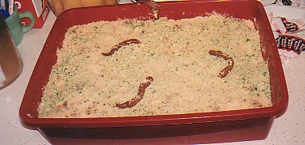
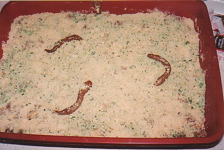

|
It's that time again...the end of the month. And that means there is a new Frog of the Month featured on my site. This month's frog is a red eyed tree frog named Precious. Click here to view the page.
I need to get offline to call my friend Mark, but I may log back onto the internet later. If I do, I'll write more then. Poor neglected blog, I'll have to write another big post soon!
|
************************************************************************
The Clay Haus pictures are back on the site!
Regular visitors, you've probably noticed that my blog looks different! I was tired of the frog background, so I decided to go with something simple. I used Stark Frenzy's "I Don't Care" template that I found on Blogskins.com. She said that she didn't care if things were changed in the template, so I made a few changes. I changed the text color, got rid of the spacer graphic, added my navigation links at the top, changed the style of the title, and other minor things like that. It's simple, but I like it. Only bad thing is that the black screen with green writing kind of reminds me of work!
I can't believe it's only in the mid 30's outside!!! It seems really cold for October. I'm not complaining though, I like colder weather. Of course, I still need to wear short sleeved shirts to work...Brenda, one of my coworkers, brought a clock in that also displays the temperature. Yesterday it was 77F in there! Today was a little cooler...only 75 degrees. Some people complain about being cold in there, but tell me this: who keeps their home heated that hot?? Most people set the thermostat to 70, maybe 72. Also, if they were outside and it was 77 they'd be wearing shorts and t-shirts...but inside they're cold?? That's why I think no one has a right to complain about being cold there.
Since the high on Thursday is only supposed to be 33F, and since they're calling for snow flurries later this week I decided to bring some of the plants I had out on the patio inside. The plants I brought in should live through the winter so I can put them out again next year. Now I need to vacuum, there are leaves and dirt all over the floor. I already sprayed all of the rooms with spider killer plus...sometimes spiders live in the plants and I want to make sure the spiders have no chance of survivial inside!
|
************************************************************************
I made a mistake and accidentally deleted the Clay Haus page mentioned in last night's post. I'll FTP it back to the site when I get home from work!
|
************************************************************************
OK, here are the remaining cemetery pictures (and Clay Haus):
Otterbein Cemetery (Somerset, Ohio)
Clay Haus (Somerset, Ohio)
Betzer Cemetery (Lockville, Ohio)
Giesy Cemetery (Baltimore, Ohio)
|
************************************************************************
I found some additional info (including the inscription above the gate) about Stonewall Cemetery on the Fairfield County Historical Parks website. I'll add it to my page tonight, but for now I'll put it here in the blog.
Inscription:
THIS WALL
which encloses the family burying ground of
of NATHANIAL WILSON (one of the early Pioneers of
the West who emigrated from Cumberland County Pa and settled
near this place A.D. 1798 when all around was one continued & uninhabited
wilderness) was commenced by him A.D. 1838 & finished in the following year
by his son GUSTIN the former having suddenly died May 12 1839
The wall is made of blackhand sandstone, and the angles in the wall are actually cut into the stone.
Also, the entryway faces Polaris, the North Star. Polaris is directly above the center of the keystone in the arch over the entrance.
|
************************************************************************
I'm not going to write much tonight since I have lots to get done before I go to work tomorrow, but I do want to post these links to new pages on my site. Yes, the new graveyard pages. I still have tons of pictures to scan, but here's the links to the pages with pictures from the first two cemeteries we visited:
Bright Cemetery (Baltimore, Ohio)
Stonewall Cemetery (Lancaster, Ohio)
And a special treat...family and friends from high school, you'll be excited to see that I have posted "El fantasma del bosque" on the site! For everyone who hasn't seen it before, this is a story written in Spanish for a project I had to do for my Spanish III class when I was a junior in high school. The story has a very lame plot, but the construction paper illustrations are what make people really laugh!
I plan to include all of these pages in the site navigation bar eventually, I just haven't decided where to put them. I won't be able to add much more to the "About Me" section of the navigation bar, or pretty soon it will be too big for the screen!
|
************************************************************************
This evening my parents were here in Columbus visiting a friend whose daughter is in the hospital, so after visiting they came over to see me. We went out to dinner and then went to see a movie. We decided to see Red Dragon. I liked Hannibal, but I still thought The Silence of the Lambs was better. I wasn't sure what I would think about this one. I must say that I thought it was extremely good, and I never thought I'd say this, but I think I even liked it better than The Silence of the Lambs! If you haven't seen it yet and liked the other two, I definitely recommend going to see this one!
|
************************************************************************
I can hardly believe it's Friday already, this week has gone by extremely fast! Time seems to go faster now that I'm back on non-Statements related projects, I feel like I'm busier. Today is going to be busy too, which is weird for a Friday. I have 3.5 hours of meetings scheduled, and I normally don't have any on Friday. Should make the day go faster though so I'm not complaining!
I don't have too much planned for the weekend, but I am going to visit some places (mostly cemeteries) that are supposed to be haunted. Here's a good website my parents sent me: Forgotten Ohio. Check out the "Ohio's Creepiest Cemeteries" link. I probably won't go this weekend, but I really want to visit the TICO Cemetery that is mentioned in the Columbus Mental Hospital Cemeteries section. I would like to see the graves that simply say "SPECIMENS" on the tombstones, it looks so creepy. I'll take pictures of my graveyard adventures and post them on the site...I'll probably create a new link in the "About Me" section of the navigation bar. I put everything that doesn't relate to frogs in that section!
|
************************************************************************
I mentioned Betsy (the new frog) in my post last night, but I forgot to include the link to the pictures of her. They're on the My 4 Pacman Frogs page. I also added some pictures of Ted and Luke, the new White's Tree Frogs. They're on the My 4 White's Tree Frogs page.
|
************************************************************************
Where should I start, it's been over a week since I last wrote in this journal! I did write last night, but since I wrote that I wasn't going to post anything it doesn't count :)
I suppose I should begin with last week. I was in Quality Practitioner training classes Tuesday-Friday. They were all day classes, which is normally nice. However, our release just moved to Lower (a testing region) and this has been a very chaotic release! I'm on two projects...on one project I have another person working with me, but on the other one I'm the only person from our area assigned to it. As a result I had to log on from home and start testing it. I ended up working until 10PM Tuesday - Thursday, which really sucked...I missed the news, I wasn't able to update my site, and I was too tired to update this blog! But now that's over...no more QP classes until November and my testing for that project is 100% complete (for this test region anyway!).
I only worked for about a half hour on Friday night, but I had other things to keep me away from the blog and the internet in general...I got a new frog!!! Yes, I know I didn't need another one, but I couldn't resist. I went to Petsmart to get fish food for the cichlids, bloodworms for the African Clawed Frogs, and crickets for the other frogs. I always look at the herps (reptiles and amphibians), even though it almost always makes me depressed. That night I saw a dead tomato frog in one of the aquariums and the sadest looking turtle I've ever seen. Poor little guy, he was in a small aquarium with dry gravel and a bright light shining on him. He was laying there with his head all stretched out of the shell, and his eyes looked so sad. I got past those aquariums when I saw 2 pacman frogs. One was a pretty decent size, but the other one was so tiny. Everytime I see a little frog in there, the next time I go back it's all dried up and dead in the aquarium. Since I had an extra aquarium I decided to buy the little albino pacman. She is so tiny, definitely the smallest pacman I've ever seen. She's probably only a few weeks (no more than a month) old. I've named her Betsy. Betsy seems to be doing great, she already ate a dozen small crickets. I swear she's already grown!
Saturday was the bonfire/hayride at my parents' house. Mom made all of the food, except for one item....since it was a Halloween bonfire I decided we really needed to have something Halloweenish on the picnic table. I decided to make a "Kitty Litter Cake". It looked so gross and funny, but it tasted pretty good. Here are a few pictures of the cake I made, and the recipe:


Kitty Litter Cake Recipe
1 German chocolate cake mix
1 white cake mix
1 large package vanilla instant pudding mix
1 package vanilla sandwich cookies
Green food coloring
12 small Tootsie Rolls
1 new (unused!!!) kitty litter pan
1 new (unused!!!) Pooper Scooper
-------------------------------------------------------------------------------
Prepare cake mixes and bake according to directions. Prepare pudding mix and chill until ready to assemble. Crumble white sandwich cookies in small batches in food processor, scraping often (I put them in a ziploc bag and crushed them with a rolling pin before putting them in the food processor). Set aside all but about 1/4 cup. To the 1/4 cup cookie crumbs, add a few drops green food coloring and mix. When cakes are cooled to room temperature, crumble into a large bowl. Toss with half the remaining white cookie crumbs and the chilled pudding. (Mix in just enough of the pudding to moisten it. Combine gently).
Put mixture into litter box. Put three unwrapped Tootsie rolls in a microwave safe dish and heat until soft and pliable (only takes a few seconds). Shape ends so they are no longer blunt, curving slightly. Repeat with 3 more Tootsie rolls and bury in mixture. Sprinkle the other half of cookie crumbs over top.
Scatter the green cookie crumbs lightly over the top. (This is supposed to look like the chlorophyll in kitty litter.) Heat 3 Tootsie Rolls in the microwave until almost melted. Scrape them on top of the cake; sprinkle with cookie crumbs. Spread remaining Tootsie Rolls over the top; take one and heat until pliable, hang it over the side of the kitty litter box, sprinkling it lightly with cookie crumbs.
The bonfire turned out really good. The weather was crappy earlier in the day, rainy and misty, but it cleared up and turned into a nice night for the bonfire. We had a pretty good turnout too. The hayride was awesome, it is one of the longest ones I've ever been on. My parents' neighbor/friend Jim drove, and he took us through my grandma's farm, my great uncle's farm, and through town. It was really cold, but it was still fun!
Sunday I tried to rest. I had a terrible headache, and laid down around 4:00 to see if that would help get rid of it since the Excedrin Migraine wasn't working. Next thing I knew I woke up and it was almost 7:00! I woke up and felt quite awake, which was bad because I couldn't fall asleep later that night. It's not good to start a Monday back at work with only 3 hours of sleep.
Last night I helped Mark haul some furniture from a nursing home near my house back to his house. Chuck the Truck definitely comes in handy sometimes (yes, I name my vehicles). I ended up staying at Mark's place until sometime after 11. I FINALLY got to see the video of him singing "Boot Scootin' Boogie). I've been wanting to see this infamous video since April of 2000. He was supposed to bring it to a party I was having, but another coworker talked him out of it since she thought it would be embarassing for him. But I finally got to see it, and it was hilarious!
Anyway, I need to pack my lunch for tomorrow and figure out what to wear. I'd like to wear a sweater since it's cool outside, but it is just too hot at work to wear anything with long sleeves. It must be 80 degrees in there!!
|
************************************************************************
Tonight turned into a very busy night, I just got home a little while ago. I'm tired so I will just wait and write about the past week tomorrow.
|
************************************************************************
Going back to work is difficult after being on vacation, and it's really bad when you go back to work during an extremely busy pre-testing time. But it was nice to get back and get into the work routine again.
I got busy yesterday and didn't get a chance to write. Justin and Serene's wedding on Saturday was fun, it's still weird to think that Justin's married. I mean, he's my age. I totally can't imagine being married right now, guess that's why it's so weird to think about him being married. I was very impressed with the bridesmaid dresses. Usually bridesmaid dresses are hideous (like the periwinkle one I had to wear at Mandy's wedding), but these were very nice. Turns out Serene's mom sewed all of them!
After the wedding reception I went to my parent's house since I was already down in their neck of the woods. They were next door at the future park talking with their neighbors. They were in the house looking through all of the junk my great uncle had accumulated over 60+ years. We found a few family pictures, some with my great grandparents in them. I took a picture that my great uncle took back in the woods behind his house. I'm not sure how old it is, but it's probably from the 1950's. I thought it was really cool looking:

I also found a Sapphire Blue Anchor Hocking Fire King pie plate with the Philbe design on it. That made me quite happy. I washed it when I got home later that night and it is in mint condition! I really do have a glass addiction. While antique (or vintage, depression, post-1940's - whatever you want to call it) is my favorite, I also like new Anchor Hocking glassware to cook with. A few weeks ago I bought a Jadeite 2000 9x13 cake pan, and I absolutely love it! I was at Meijer tonight and was browsing through the glass ovenware. Jadeite 2000 was on sale, so I bought a batter bowl. See, told you I was addicted!
This weekend we're having a bonfire/hayride at my parent's house. It's a Halloween theme so I'm making some gross, disgusting looking Halloween dishes. After I determine that they turn out OK I'll post the recipes. Speaking of recipes, tonight I tried one of the recipes from the Ohio State Grange cookbook that I bought at the Fairfield County Fair this past Wednesday. It's a Cinnamon Cheesecake recipe. It's extremely easy to make and it is delicious!! I definitely recommend clicking on this link and trying it!
|
************************************************************************
I only have two words to descibe tonight's Opera Columbus performance of Puccini's Tosca...FAN TASTIC! Chrissie and Davis are the only two people that would get that joke! But honestly, Tosca was awesome! Very dramatic, and very tragic. Next month is Mozart's The Magic Flute, that should be good too. Chrissie kind of knew one of the chorus member's in the opera tonight - he's one of her coworker's roomates. He was in the chorus during last year's season, in The Daughter of the Regiment. She gave Wes, her coworker, our programs from last year so Anthony could sign them for us. Too funny!
Other than the opera, it was a pretty uneventful day. I went to Kroger to get some pumpkin puree so I can make pumpkin cookies to take to work on Monday. There's nothing special about Monday, I just feel like taking in cookies to be nice. I cleaned house a little, and I worked. Yes, I logged in to Nationwide and worked during my vacation. I admit I'm a workaholic, I just can't help it! If I didn't do some work over vacation I'd be totally overwhelmed on Monday. I'm in Quality Practitioner classes for the rest of the week, so Monday is my only day next week where I can focus totally on testing related tasks. Thank god for home access, at least I'll be able to log on and get some work done after those classes let out.
This afternoon my cordless phone that I keep in the kitchen fell off of the holder and knocked a small glass lid on the floor. The lid shattered, and since I wasn't thinking I started to clean up the mess in my bare feet. For those of you that read my blog regularly, you probably feel bad for my feet since I write about injuring them all the time....yes, I stepped on a piece of broken glass and really cut up my foot bad. I pulled the glass chunk out and it didn't bleed so I kept on cleaning up the rest of the glass. I threw what I gathered up away, and then I noticed the kitchen floor - my foot started bleeding and I didn't know it so there were little red spots all over the white floor. And I only had half an hour to mop the floor and get ready before Chrissie came over for the opera...I felt really rushed, but I got done with time to spare.
Tomorrow's Justin and Serene's wedding. I'm sure I'll have stuff to write about after that!
|
************************************************************************
Tonight (OK, techincally last night) I went to the truck pulls at the fair with my family...mom kind of bullied me into going, she whined enough and even bribed me with gas money! It was a lot of fun though. Lots and lots of Chevy trucks. There were some Fords and Dodges, but I was definitely more interested in the GMC and Chevy trucks. That's probably one of the biggest reasons I wasn't impressed with the diesel truck pulls, most of the trucks in that grouping were Dodge Rams. They were also having tractor pulls but we didn't stick around for those. That was fine with me, because my stomach was feeling terrible...my stomach always gets upset when I eat greasy foods. Well, I did eat a piece of pizza, so maybe part of my upset stomach had to do with the greasy cheese...sometimes dairy products really tear my stomach up. Maybe I should try some of that Lactaid stuff?
I need to decide what I'm going to wear to the opera. Maybe I'll wear black dress pants and a light weight sweater. I don't really feel like wearing a dress, of course, when do I feel like wearing a dress?!
|
************************************************************************
Susan sent me some more frog lore...I want to get put it on it's own page like I did for the other frog lore she e-mailed me, but for now I'll post it in my blog:
From D J Conway's book Animal Magic.
The frog has been a Goddess symbol of rebirth since Neolithic times.
In Egypt there was a frog goddess heket who protected newborns and
mothers. Th frog was also a symbol of the Great Mothers Isis and
Hathor.
In China the frog is worshiped as a healer and as a deity who brings
prosperity to business.
The Greeks and Romans considered it a symbol of Aphrodite and a
symbol of fertility and harmony between lovers.
To the Celts the frog was Lord of the EArth and represented healing
water.
Superstitions about frogs:
-Pliny the Elder said that frogs attracted friends to your house
along with good luck.
-It is still considered to be a reliable weather predictor as it will
croak when the barometer goes down.
-If a frog comes into your house by itself it symbolizes good luck
arriving.
-The ornamental cloth closing for garments called a frog may be a
remnant of and o! ld French custom of embroidering frogs on clothes for
good luck.
-In many places it is considered unlucky to kill a frog.
-Handling frogs and toads is said to give you warts.
-If a dog eats a live frog it is unable to bark.
Magical attributes: A symbol of initiation and transformation.
Cleaning out negativities and distractions and replacing them with
positive energy. Joy in a new cycle of life. Being reborn after a
period of seeming death, when undergoing an initiation of
transformation. Beginning a new life cycle by dispensing with
negative thoughts and deeds.
Chant:
Your singing marks the season
Of new life and new beginning,
A time of wonder and of joy,
A time of rebirth and of Light.
Like the tiny frog in spring renewing,
I joyfully face my new beginning.
I boldly stand upon the threshold,
And leave confusion for the Light.
|
************************************************************************
Today was the first of three days I'm taking as vacation from work. I had a fun time. The highlight of my day was definitely the combine demolition derby at the Fairfield County Fair! There were 12 combines competing, and it was probably the most exciting one yet...a combine actually flipped on it's side during tonight's second heat of competitors!! Luckily the driver was OK.
The fair was fun...lots of greasy, terrible-for-your-health fair food. We also went through all of the livestock barns. I had fun petting the sheep, but they all kept trying to eat the sleeves on my shirt! I was petting one sheep when I felt a tug on the side of my pants, near the pocket...that's when I noticed that the other sheep in the pen was trying to eat my work pager! Wouldn't it be fun to return to work next week and tell my manager that a sheep ate my pager?!
Actually, tonight I had another encounter with wildlife on the drive back to my place. Well, it wasn't really an encounter, but close enough. Mom warned me to watch for deer tonight, because there have been a lot out in the fields recently. I didn't have a deer run in front of me, but I did have a coyote run in front of me on one of the back, country roads! It was eating roadkill, and there was at least one other coyote in the field beside the road. At first I thought it was a dog, but when I got closer I could tell it was definitely a coyote. There have been more and more moving into Fairfield County each year. They are ugly creatures, they kind of remind me of a thin, starved, mangy German Sheppard. And listening to them bark and howl at night down there is a little creepy.
Mom made my favorite cookies last night, and I finally got the recipe for them and posted them on the site...Soft Pumpkin Cookies. I bought a gigantic Ohio Grange cookbook at the fair tonight, and just from skimming through it I can tell that I will be spending a lot of time in the kitchen trying out some of the recipes! I also picked up a little recipe booklet at the Ohio Beekeepers booth, and there are a few really good "cooking with honey" recipes in it.
I thought I had more to write about, but I can't think of anything right now. I think I'll go and get some sleep!
|
************************************************************************
Oops, I also wanted to post a link...
Susan sent me a really cool e-mail about frog lore. I copied it and put it on this page.
|
************************************************************************
I looked outside tonight and noticed that I had a few cayenne and chili peppers that needed to be picked. I went outside and didn't put shoes on, as usual. Well, when I went back inside the top of my right foot really itched. I looked down, and wouldn't you know it...a mosquito bite! I know a few people that would be worried about West Nile virus. That really doesn't concern me, but the itching is really annoying! I had a mosquito bite a few weeks ago on my ankle that was really itchy. I woke up the next morning and I couldn't see the bite anymore because I pretty much scratched it off in my sleep (I know, that is gross). I now have a new scar near my ankle from that one!
My plants that live outside must really be enjoying this cold weather, because this is the best they've looked all year. The passion vine is definitely my favorite plant this year. Not only are the flowers the coolest (they almost look fake!), but that plant is really big! The lady who sold it to me at The Urban Gardener told me that "those things grow like a son-of-a-bitch" was totally right! It's almost covered the entire fence. On one side it's grown so big that it doesn't have fence to climb on anymore. So do you know what it did...it managed to wrap itself around the fern in the hanging basket that's about 3 feet away from it! I doubt that's good for the fern, but I think I'll let it continue to coil around the fern because I want to see just how big this plant will get!
We had a team meeting today, and two of the people in our Business Analyst Development program sat in to learn what a normal Systems Quality meeting is like. As the last agenda item in our team meetings we have a thing called "snips". This is something my manager did back in college at fraternity meetings. We go around the table and we all have to say something positive - either about ourselves or another person. Most of us just talk about our plans for the weekend. Well, my snip was that I'm going to have a few days off. Ben asked if I had any plans, so I told them about the combine demolition derby, the opera, and the wedding. The idea of me going to a combine demo derby and an opera in the same week made everyone laugh. What can I say, I'm just cultural :) After I told them about my opera plans I looked over at Sheri, and I knew what was coming. She ALWAYS gives me a hard time about the music I listen to, and she usually announces to people that I've just introduced myself to that "Beth never buys a CD unless it has an advisory label on it". Sure, about 90% of my CDs do have an advisory label on them, but I don't limit myself to just those. Anyway, Sheri said "I can't believe you'd go to an opera. Afterall, you listen to Marilyn Manson". So then we had a group discussion about my music. It's really not a big deal, but since she brings it up at least once every day it starts to become annoying. I will never understand why she makes such a big deal about it. But lucky for me, at least today she just brought up the music, and didn't talk about my big feet like she usually does...
|
************************************************************************
Tonight I was inspired to put some of my nature/scenic pictures out on the site after seeing Erik's Farmland photo. Of course, I think his Farmland photo is much more impressive than my photos. He is a very talented artist, and I definitely recommend visiting his Online Art Gallery.
For a person that doesn't really enjoy it, I sure do spend a lot of time talking on the phone! Tonight I talked with Theresa for about an hour and a half. She just wanted to make sure I was still planning to attend Justin and Serene's wedding. Then I called Chrissie to make sure she got my message about the wedding...she lost her invitation when she moved recently and couldn't remember what time it started. Well, I was on the phone with her for a long time too. She finally met Kyle, and it sounds like things went well. But guess what she did...she asked him what he would think if he met her NRA member friend who drives a Chevy truck with a leather and deer air fresheners. And he said he'd think that person was from "his neck of the woods"! Oh my, I really must get rid of this "redneck girl" image!
Today at work while a few of us were gossiping, an announcement came over the PA system at work saying that there was an emergency situation and that we all needed to exit the building. Earlier that day there was a fire alarm test down on the first floor, so most of us assumed that this announcement was also a test. However, unlike the test this morning, security didn't announce that this alarm was just a test. A few people kind of freaked out and rushed out of the building. It was almost time for me to leave anyway, so I packed up my stuff and shut down the computer. I walked downstairs with Lina and Stacie, and when we got down to the first floor security was standing out in the hall telling people to go back upstairs, it was just an alarm malfunction. Then they announced that it was just a malfunction over the PA. Well, that was all well and good, except that all of the people standing outside didn't hear that announcement since there is no PA system outside! And security didn't go out and tell them, so when I walked outside I told a bunch of people that I knew (and some that I don't know) that it was a malfunction and that security told everyone to go back upstairs. Most of the people I knew believed me and went back inside, but a lot of people still stayed out waiting for security to tell them it was safe. They stood outside for at least 10 minutes before security realized they were still out there! I found that just too funny!
|
************************************************************************
Well, this hasn't been a bad Monday at all. Knowing that I have a few days of vacation coming up soon probably makes it even better! :)
My manager, Ben, was on vacation last week. And he got me a present from a "penny sale" that he went to. A church up in New York was having it, it's like a big yard sale where everything is only $.01. It's a stuffed frog toy, but it's unlike any of the other frog stuff on my desk...this frog has a look on it's face that just looks mean and evil! I think it's the smile that does it, but it's eyes look kind of mean too. I'll have to remember to bring my camera in sometime to take a picture of it. Anyway, this frog's facial expression totally sums up how I feel at work most days ;) No, I'm really not that evil at work. In fact, Lina, the coworker who sits across from me, says that I am too nice.
It is so nice outside today, I can't wait to get out of here and go home so I can go for a walk! Poor Sheri, tonight she is meeting a friend down in Lancaster to see Trace Adkins perform at the fair. I guess he's a country singer...I wouldn't know since I never listen to country. Sheri is a big country music fan, but even she's not looking forward to the concert tonight. I bet she'll have fun though!
|
************************************************************************
The results are in, and the two new tree frogs' names are Ted and Luke. Both have adapted really well to the new home, and they both get along well with Emily and Sandy.
It was a rather boring weekend. I started cleaning on Friday night, but didn't get much accomplished since I was so tired. But I didn't want to go to sleep early either, I wanted to get back to my normal sleeping pattern. Saturday I went down to my parents' place for a few hours. I had some tea and other stuff to give to my mom, and we dropped off some glass jars and crocks at Nite Lite Candle to be filled. Nite Lite has awesome candle scents, they burn great, and their refilling service is the best! I had a glass pumpkin and a crock to be filled. I'm having the pumpkin filled with Spice Smoke Out and the crock filled with Patchouli. We also went to an orchard (I can't remember the name of it) so mom could get some pumpkins to put in the yard. They'll just sit in the yard until we carve them about a week before Halloween. Mom wasn't feeling well (sinus infection) so I didn't stay long. Whenever I visit she feels like she needs to entertain me, so I left so she'd get some rest instead!
I absolutely love this cooler weather...and tomorrow's going to be even cooler!! I think the high for tomorrow is either 58 or 59 degrees. That means I'll finally we able to get out the long sleeved clothes! This really is my favorite time of the year! And this week is the Fairfield County fair, which means that the combine demolition derby is Wednesday evening!!!
Speaking of the combine demolition derby, that reminds me of a conversation that I had with Chrissie on Thursday night. She was telling me about the new guy in her life (well, he's kind of in her life, they've just talked via e-mail and the phone though). I guess he drives a pickup truck, likes to fish, and loves to hunt. Chrissie said that he talks with an accent, and that's he's "kinda a redneck". She was telling me that he said he'd like to take her to a shooting range sometime, and she thought that was terrible. I told her that it really doesn't seem like a romantic date, but that she should go if she gets the chance! I personally think it'd be fun to try firing a gun...and besides, it's a shooting range, she'll be shooting at a piece of paper, not an animal. Anyway, somehow our conversation turned into talking about me and how I might be a redneck!! I disagreed with her, but here's what she had to say:
Why Beth is a redneck:
- Her love of Chevy (or GMC) pickup trucks.
- Her NRA membership.
- The truck leather scented air freshener with cowboy hats, ropes, and other western things on it.
- The truck air freshener with the deer picture on it.
- She grew up near Lancaster.
- She goes to the combine demolition derby each year.
I don't think that's enough reasons to consider me a redneck. Not that being a redneck is bad, but I just don't think I am. First of all, there is nothing wrong with my preference for GMC trucks. They're rated the best, they're "like a rock"!! Most people have a preference for a certain type of vehicle, mine just happens to be GMC trucks. Besides, my truck is all one color, I don't have a gun rack in the back, and I don't have Yosemite Sam "Back Off" mud guards on it! :) And the air fresheners...I like the scent of leather, that's why I bought that one. Not for the country western motif on it. Mark gave me the deer air freshener....one time I commented on the one hanging in his car, and he gave me one for the truck as a thank you for scanning pictures for him.
Second, what's wrong with defending my second amendment rights by joining the NRA? They are a bit extreme sometimes, but for the most part I agree with their position on gun control so I decided to join. Plus, the sticker looks pretty cool on the truck and it helps prevent people from tailgating! ;)
Now, about growing up near Lancaster...bad argument on her part, she grew up near Lancaster too and we both went to the same high school! And the combine demolition derby is cool, it's not everyday one gets to see big pieces of farm machinery destroying each other!
Also, would a redneck be going to the opera with Chrissie on Friday night? I think not. I rest my case! :)
Speaking of the opera, I am excited about it. Battelle had a good discount on seats, so we're up towards the front of the theatre again. This week's performance is Tosca. I think the next one it The Magic Flute.
I have a wedding to go to this weekend. That means I'll have to go dress shopping. I think I only own one dress. Maybe I own 2 or 3, but that one dress I'm thinking of is my favorite. I wear it just about everytime I have to dress up. I own some skirts too, but I've had all of them since high school so they are quite outdated. I hate dressing up. It's not so much the dresses and skirts, but it's the hose and dress shoes. Pantyhose are terrible, they tend to make my legs itch. And you can't scratch them because then they rip and snag. But the worst thing is the shoes. Women's dress shoes are the most uncomfortable shoes in the world! I'm thankful we get to dress "business casual" for work.
Today I went to New Uses. I found an Anchor Hocking milk pitcher...it's green and has grapes on it. It looks like their Panelled Grape design, but I thought that was just made in milk glass. I'll have to do some research. I also found a coppercraft wall hanging. But they didn't have any Early American Prescut today.
Well, I need to iron the pants I want to wear to work tomorrow. And I'll have to dig something long sleeved out of the closet! But I'll have to wear layers, because even though it's cool outside, it's always extremely hot inside at work.
|
************************************************************************
Question....I got two new White's Tree Frogs today. I haven't decided what to name them. White's Tree Frogs are also called Dumpy Tree Frogs or Smiling Tree Frogs. Any name suggestions????
I usually name my pets after people, but I'm open to any suggestions....
|
************************************************************************
I should be tired right now...but I'm not! I don't feel like falling asleep, which I will totally regret tomorrow morning when it's time to wake up for work. Yesterday I worked a straight 18.5 hours!!!!!!!! Being at work sooooo late has sort of thrown off my routine sleeping schedule. Yes, it was only one night but as I have explained before, I don't sleep well normally so one night is enough to mess up my schedule. And I had a cup of Moroccan Mint tea, which is green tea and peppermint. Green tea has caffeine so that doesn't help! Green tea doesn't have a lot of caffeine, but I usually just drink water or noncarbonated decaf drinks. So yeah, I'm feeling rather awake right now :)
Anyway, I'll stop rambling now. Let's talk about my 18.5 hour workday. It's quarter end, which means I help QC the quarterly statements before Deidee gives the OK for our Documents Services area to print the thousands on IA statements that we mail. There's never a set time for QC, because we always get the output at a different time. It all depends on how slow the system is moving, if any jobs abend, etc. Well, yesterday didn't go so great, thus my long work day. It didn't feel all that long though, which really did help. But when I got home I was ready to collapse! And I had some weird dreams, but I forgot what they were. Probably a result from eating dinner so late...we ate around 11PM. I didn't go into work today. I slept in late and then worked from home this afternoon. I won't have to take any vacation time for that half day sleeping since I worked 2 and a half work days just on Wednesday!
|
************************************************************************
One of my coworkers, who likes spicy foods as much as I do, sent me a chili contest joke yesterday that really made me laugh. You can read it by clicking on this link.
|
************************************************************************
Today has been a VERY busy day! So far this week has gone really fast. Yesterday I spent about 80% of my day helping get e-mail, printers, etc set up for the new contractors. The contractors are being shared between the two Systems Quality teams. Cindy asked me if I could set up their Lotus Notes and map the printers for them since I am a "miracle worker" when it comes to computer stuff. I tend to be a bit modest, so being called a miracle worker sounded weird. Anyway, I got Kyle's LNotes set up in no time, but Joel's was another story. There was a corrupt file that I couldn't fix without reinstalling the software. I was finally able to track down a disk with the software, but then ran into problems with finding an administrator ID for the PC. I finally found that, installed notes, and guess what...it still didn't work. I installed it again, just like I did the first time, and it finally worked. It was a little frustrating, but deep down I kinda had fun...and it did make the day go fast.
Since I didn't get around to all of the things I wanted to do yesterday, I've had a lot to keep me busy today. Helping the contractors again (we had a few ID problems - and of course, my ID got messed up since they were using mine to log into the system until their IDs were set up). Also, I finished up two assignments that I was working on. And I made a few minor update's to our intranet site. Now I need to come up with an estimate for a project that I have already estimated once and forecasted once. I hate doing estimates. I just want to test!
Well, time to get back to work :(
|
************************************************************************
|